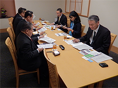
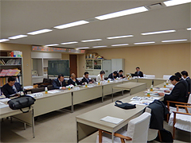
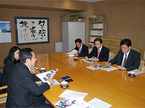
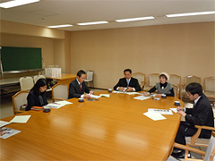
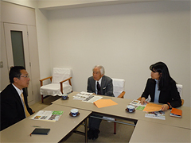

埼玉県議会の各政党・会派と懇談しました
埼玉県生協連は、さいたまの生協の活動取り組みやくらしの願いを伝える機会として、埼玉県議会の政党・会派の皆様との懇談をおこなっています。11月から4つの政党・会派と懇談しました。
自由民主党県議団役員の皆様との懇談

- 日時：
- 2014年11月28日（金）17:00～18:45
- 会場：
- 浦和ロイヤルパインズホテル
- 出席：
- 小谷野五雄団長、小島伸昭幹事長
宮崎栄次郎政務調査会長、荒川岩雄総務会長代理 - 県連：
- 岩岡宏保会長理事、滝澤玲子常務理事
民主党・無所属の会議員団との懇談

- 日時：
- 2014年12月17日（水）16:30～17:25
- 会場：
- 埼玉県議会会議室
- 出席：
- 吉田芳朝代表、浅野目義英代表代行、
山川百合子副代表、木村勇夫幹事長、
田並尚明総務会長、高木まり政調会長、
菅 克己議員、井上将勝議員
中川 浩議員 - 県連：
- 岩岡宏保会長理事、齊藤民紀常務理事、亀山裕二常務理事
公明党議員団との懇談

- 日時：
- 2015年3月2日（月）10:30～11:20
- 会場：
- 埼玉県議会会議室
- 出席：
- 西山淳次団長、蒲生徳明幹事長、藤林富美雄議員
- 県連：
- 岩岡宏保会長理事、滝澤玲子常務理事
共産党県議団との懇談

- 日時：
- 2014年12月22日（月）14:00～15:00
- 会場：
- 埼玉県議会会議室
- 出席：
- 柳下礼子団長、村岡正嗣議員、県議団事務局
- 県連：
- 岩岡宏保会長理事、滝澤玲子常務理事
社会民主党県議との懇談

- 日時：
- 2014年12月16日（火）13:30～14:25
- 会場：
- 埼玉県議会会議室
- 出席：
- 社会民主党 佐藤征治郎議員
- 県連：
- 岩岡宏保会長理事、滝澤玲子常務理事
懇談の内容
懇談では、県生協連の今年度活動の取り組みを紹介し、意見を交換しました。
・2月大雪被害への生産者応援メッセージのお届け、県内消費者団体交流会、第29回埼玉県原爆死没者慰霊式、2014コヨットin埼玉、マスコミ埼玉支局長会による生協施設見学会、第50回埼玉県消費者大会、彩の国食と農林業ドリームフェスタ、会員生協の事業状況、埼玉県内の市町村における消費生活関連事業調査結果概要、生協ネットワーク協議会の概況等